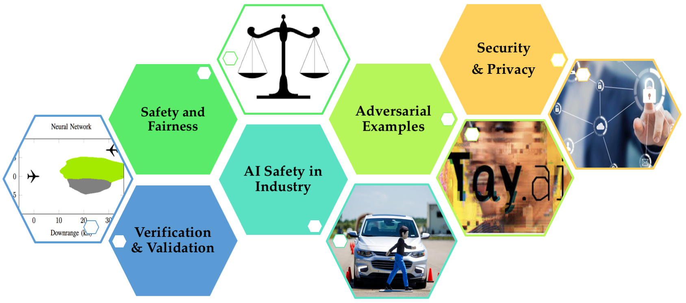
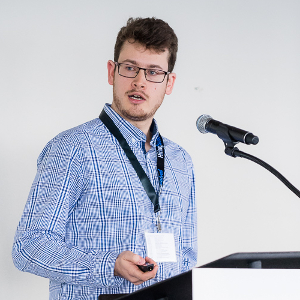

CS 521: Seminar on AI Safety
Spring 2018, Class: Thu 10:30-12:00pm, 260-113

Description:
In this seminar, we will focus on the challenges in the design of safe and verified AI-based systems. We will explore some of the major problems in this area from the viewpoint of industry and academia. We plan to have a weekly seminar speaker to discuss issues such as safety, fairness, verification of AI systems, reward misalignment and hacking, secure and attack-resilient AI systems, diagnosis and repair, issues regarding policy and ethics, as well as the implications of AI safety in automotive industry.
Attendance:
We plan to take attendance using Google forms starting from the second week. If you are taking the class for credit, you need to attend 6 out of 8 talks (not including the first and last session).
The last talk will be held on June 7, which is a day after the official end of Spring quarter (June 6). We plan to still hold the talk but we do not count the last session towards attendance.
Please record your attendance here.
Instructor
Dorsa Sadigh
Office Hours: by appointment Gates 142
Webpage
Timeline
| Date | Speaker | Affiliation |
|---|---|---|
| April 05 | Michael Benisch, Lyft
|
AI and Safety Challenges to Deploying Autonomous Vehicles at Scale
In this talk, we will discuss the unique challenges for AI and safety posed by the emergence of autonomous vehicles. Almost every aspect of this technology, from the stakes, to the complexity, to the business opportunity, to the potential for societal impact, combines to make it one of the biggest challenges for building safe AI systems that we as a society have faced to date. I will discuss some of the key challenges, such as moving fast while staying safe, safely using deep learning, and building redundant, robust AI. Additionally, I will provide some insight into how we at Lyft’s Level 5 engineering team have begun thinking about these challenges. Bio: Michael is a Director of Engineering at Lyft where he leads the Autonomy team for the in-house Level 5 self-driving initiative. Prior to joining Lyft, Michael was at Rocket Fuel, an ad tech company that participates in auctions for nearly every display and mobile impression on the web (over 200 billion per day), where he was a VP of Engineering responsible for leading the AI, Machine Learning, and Apps teams. Systems developed by his teams were responsible for managing billions of dollars of ad spend for many of the world's largest brands. Prior to Rocket Fuel, Michael was a co-founder of Hg Analytics, a quantitative hedge fund that used AI and Machine Learning to trade billions of dollars on public stock exchanges. Michael has a bachelors in Computer Science from Brown and a Ph.D. in Computer Science from Carnegie Mellon, where he was named a distinguished Siebel Scholar and published over 30 papers in top-tier, peer-reviewed conferences and journals. |
| April 12 | Harini Kannan
, Google Brain
|
Adversarial Robustness for AI Safety
Many deep learning models today are vulnerable to adversarial examples, or inputs that have been intentionally optimized to cause misclassification. In the context of computer vision, object recognition classifiers incorrectly recognize images that have been modified with small, often imperceptible perturbations. In this talk, I will first discuss some important topics in AI Safety, and then motivate why it's important to develop models robust to adversarial perturbations. Then, I will give an overview of the adversarial example literature and go over the concepts behind previously proposed attacks and defenses. Finally, I will discuss adversarial logit pairing, the current state of the art defense on ImageNet. Bio: Harini Kannan is currently a member of the Google Brain Residency program. She recently graduated with a Bachelor's and Master's degree from MIT, where she was supervised by Professor Antonio Torralba in the computer vision group. Her master's thesis was centered around developing the first neural networks for gaze tracking. Harini's current research interests are in developing neural networks to become more robust to adversarial attacks. She is the lead author of Adversarial Logit Pairing, the current state of the art defense to adversarial attacks on ImageNet. |
| April 19 | Florian Tramer, Stanford

|
Integrity and Confidentiality for Machine Learning
Training and inference of machine learning models is often outsourced to a centralized cloud service, which raises fundamental questions of trust and confidentiality. On the one hand, the user(s) have no guarantees that the cloud provider won't tamper with the training/inference algorithm, e.g., to reduce its work load or intentionally return maliciously crafted responses. On the other hand, the provider observes all the users' data, a serious privacy breach in settings where this data is of a sensitive nature (e.g., medical records). In this lecture, we will explore various techniques from cryptography, security, and statistics to ensure integrity and confidentiality when applying machine learning to user-provided data. Specific topics include computing on encrypted data, zero-knowledge proofs, trusted hardware, differential privacy, and others. Bio: Florian Tramèr is a PhD student in Computer Science at Stanford University working with Dan Boneh. His current research focuses on security aspects of machine learning and cryptocurrencies. Prior to coming to Stanford, Florian worked as a research assistant at EPFL in Switzerland on problems related to cryptography, security and privacy. |
| April 26 | Ken Shotts, Stanford GSB
|
Ethics, Public Policy, and Autonomous Vehicles
In this session we will explore the ability of market incentives and government regulations to both encourage and discourage ethical business practices. We will also explore several ethical and strategic issues related to development of autonomous vehicles. The session introduces cost-benefit analysis and analyzes the role of social institutions in aligning profit incentives and social welfare. We will also discuss moral intuitions that people have about companies’ safety decisions. Specific questions to be covered include: Bio: Ken Shotts is the David S. and Ann M. Barlow Professor of Political Economy at the Stanford Graduate School of Business. He received his BA in Political Science from Stanford in 1993 and his PhD from the GSB in 1999. In addition to his time at the Stanford, he has taught at Northwestern and University of Michigan, and has been a visiting scholar at the Hoover Institution and Princeton’s Woodrow Wilson School of Public and International Affairs. In his research, Ken uses game theory to analyze how elections and political institutions influence policy choices made by government officials. He has published papers on presidential leadership, racial redistricting, term limits, and the politics of regulatory enforcement. He is currently doing research on several topics, including electoral accountability, policy entrepreneurship, political risk, and industry-level self-regulation. Ken teaches GSB classes on Strategy Beyond Markets and Business Ethics. |
| May 03 | Paul Christiano, OpenAI
|
Learning Rewards for Deep RL
In domains with easily measurable objectives, deep reinforcement learning has the potential to turn larger and larger computing budgets into smarter and smarter behavior. This possibility was recently illustrated by AlphaZero's impressive performance. Unfortunately, many of the tasks we care about don't have simple short-term objectives: making good policy, predicting long-term consequences, deciding what news to read, resolving disagreements, clarifying our preferences… Progress in deep RL could make us extremely good at optimizing simple short-term objectives like profit or user engagement, without corresponding improvements in our ability to figure out what we actually want and how to get it. This talk will cover techniques for applying deep RL to problems with no simple objective. We'll discuss methods for efficiently doing RL with expensive reward functions (like detailed human evaluations), as well as techniques for using AI to improve on human evaluations and more faithfully capture our preferences. Bio: Paul Christiano is a researcher at OpenAI where he works on safety for deep RL. He completed a Ph.D. in statistical learning theory at Berkeley in 2017, with a focus on learning from untrusted data. He has received STOC and COLT best student paper awards. He is a technical advisor to the Open Philanthropy Project for their work on AI safety. |
| May 10 | Jim Kapinski, Toyota
|
Verification of Learning-Enabled, Cyber-Physical Systems
Cyber-physical systems (CPSs) are used in many mission critical applications, such as automobiles, aircraft, and medical devices; therefore, it is vital to ensure that these systems behave correctly. Designs for modern CPSs often include learning-enabled (LE) components, such as neural networks and support vector machines, whose behaviors emerge as a result of processing training data; however, verifying correct behavior of LE aspects of CPS designs is difficult, as the training data and resulting system behaviors can be hard to characterize. To address these challenges, new analysis techniques are needed to increase confidence in the reliability of LE CPSs. This talk describes ongoing challenges in verification for LE CPSs and presents two new approaches to address these challenges. One approach is based on falsification, which uses best-effort methods to automatically identify system behaviors that fail to satisfy requirements. A second approach provides a formal proof of correctness for the system by learning candidate safety certificates from simulation traces, which are then confirmed using automated reasoning tools. The new techniques are presented in the context of autonomous driving application examples. Bio: James Kapinski is a Senior Principal Scientist in the Toyota Research Institute of North America (TRINA) in Ann Arbor, Michigan and is a Senior Member of the IEEE. James received a B.S. and M.S. in Electrical Engineering from the University of Pittsburgh in 1996 and 1999, respectively, and a Ph.D. from Carnegie Mellon University in 2005. From 2007 to 2008 he was a post-doctoral researcher at Carnegie Mellon University. He went on to found and lead Fixed-Point Consulting, serving clients in the defense, aerospace, and automotive industries. James has been with Toyota since 2012. His work at Toyota focuses on advanced research into verification techniques for control system designs and analysis of hybrid dynamical systems. |
| May 17 | Mariano-Florentino Cuéllar, CA Supreme Court
|
The Near Impossibility of Regulating Artificial General Intelligence Development (and How to Change That)
Although society may have compelling reasons to seek some regulation of the development of artificial general intelligence, implementing a sensible regulatory framework is likely to be enormously difficult. My premise here is that acknowledging and trying to understand such difficulty is an indispensable part of any credible effort to address the challenges. I expect to discuss the importance of implementing a standard strategically –– with multiple audiences in mind, and with an eye towards embedding certain aspects of the standard in widely used technology. I’ll also consider what it might take to build sufficient capacity for detection of AGI research activity, the imposition of credible sanctions where necessary, and the institutional foundations of effective AGI development regulation. Bio: Justice Mariano-Florentino Cuéllar began serving on the Supreme Court of California in January 2015. Previously, he was the Stanley Morrison Professor of Law and Professor (by courtesy) of Political Science at Stanford, and Director of the University's Freeman Spogli Institute for International Studies. A scholar of public law and institutions, Cuéllar has written books and articles on administrative law and legislation, cyberlaw, criminal justice, public health law, national security, and immigration. In the federal government, Justice Cuéllar served as Special Assistant to the President for Justice and Regulatory Policy at the White House (2009-2010), where he led the Domestic Policy Council staff responsible for civil and criminal justice, public health law and policy, and immigration. He also led the Presidential Transition Task Force on Immigration (2008-2009) and co-chaired the U.S. Department of Education’s Equity and Excellence Commission (2011-2013). Justice Cuéllar serves on the boards of Harvard University, the Hewlett Foundation, and the American Law Institute, and chairs the boards of the Center for Advanced Study in the Behavioral Sciences, AI Now, and Stanford Seed. Within the California judiciary, he leads the statewide Language Access Implementation Task Force. A naturalized U.S. citizen born in northern Mexico, he is a graduate of Harvard, Stanford, and Yale Law School. He began his legal career at the U.S. Treasury Department's Office of Enforcement and clerked for Chief Judge Mary Schroeder of the U.S. Court of Appeals for the Ninth Circuit. |
| On May 17, there is also another very relevant talk held by SystemX: Thursday, May 17th, 4:30-5:30pm Gates Bldg: Room B03. Here are the details: | ||
| May 17 | Sanjit Seshia, UC Berkeley
|
Towards Verified Artificial Intelligence
The deployment of artificial intelligence (AI), particularly of systems that learn from data and experience, is rapidly expanding in our society. Verified artificial intelligence (AI) is the goal of designing AI-based systems that have strong, verified assurances of correctness with respect to mathematically-specified requirements. In this talk, I will consider Verified AI from a formal methods perspective. I will describe five challenges for achieving Verified AI, and five corresponding principles for addressing these challenges. I will illustrate these challenges and principles with examples and sample results from the domain of intelligent cyber-physical systems, with a particular focus on autonomous vehicles. Bio: Sanjit A. Seshia is a Professor in the Department of Electrical Engineering and Computer Sciences at the University of California, Berkeley. He received an M.S. and Ph.D. in Computer Science from Carnegie Mellon University, and a B.Tech. in Computer Science and Engineering from the Indian Institute of Technology, Bombay. His research interests are in formal methods for dependable and secure computing, with a current focus on the areas of cyber-physical systems, computer security, and robotics. He has made pioneering contributions to the areas of satisfiability modulo theories (SMT), SMT-based verification, and inductive program synthesis. He is co-author of a widely-used textbook on embedded, cyber-physical systems and has led the development of technologies for cyber-physical systems education based on formal methods. His awards and honors include a Presidential Early Career Award for Scientists and Engineers (PECASE), an Alfred P. Sloan Research Fellowship, and the Frederick Emmons Terman Award for contributions to electrical engineering and computer science education. He is a Fellow of the IEEE. |
| May 24 | Claire Tomlin, UC Berkeley
|
|
| May 31 | Dawn Song, UC Berkeley

|
|
| June 07 | Norberto Andrade
, Facebook, Privacy and Public Policy
|
© Dorsa Sadigh 2018